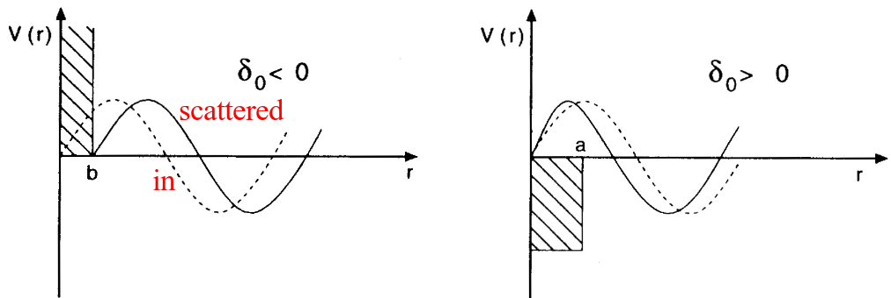
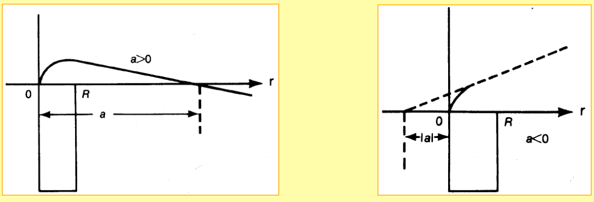
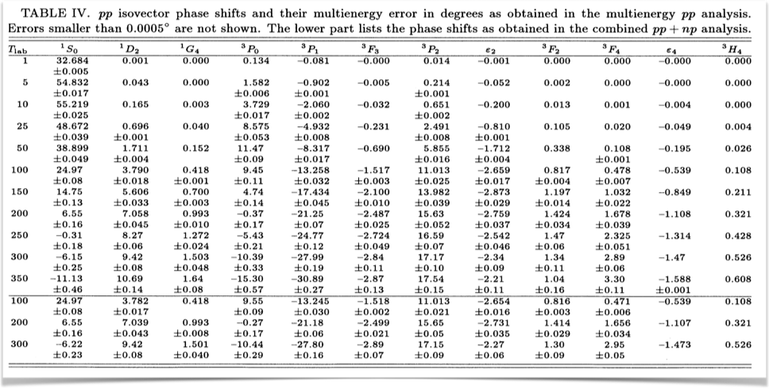
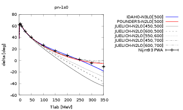
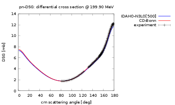

| Baryons | Mass (MeV) | Mesons | Mass (MeV) |
|---|---|---|---|
| \( p,n \) | 938.926 | \( \pi \) | 138.03 |
| \( \Lambda \) | 1116.0 | \( \eta \) | 548.8 |
| \( \Sigma \) | 1197.3 | \( \sigma \) | \( \approx 550.0 \) |
| \( \Delta \) | 1232.0 | \( \rho \) | 770 |
| \( \omega \) | 782.6 | ||
| \( \delta \) | 983.0 | ||
| \( K \) | 495.8 | ||
| \( K^{\star} \) | 895.0 |
Before we proceed, we will look into specific quantum numbers of the relative system and study expectation vaues of the various terms of
$$
V(\mathbf{r})= \left\{ C_c + C_\mathbf{\sigma} \mathbf{\sigma}_1\cdot\mathbf{\sigma}_2
+ C_T \left( 1 + {3\over m_\alpha r} + {3\over
\left(m_\alpha r\right)^2}\right) S_{12} (\hat r)\right.
$$
$$
\left. + C_{SL} \left( {1\over m_\alpha r} + {1\over \left( m_\alpha r\right)^2}
\right) \mathbf{L}\cdot \mathbf{S}
\right\} \frac{e^{-m_\alpha r}}{m_\alpha r}
$$
When solving the scattering equation or solving the two-nucleon problem, it is convenient to rewrite the Schroedinger equation, due to the spherical symmetry of the Hamiltonian, in relative and center-of-mass coordinates. This will also define the quantum numbers of the relative and center-of-mass system and will aid us later in solving the so-called Lippman-Schwinger equation for the scattering problem.
We define the center-of-mass (CoM) momentum as
$$
\mathbf{K}=\sum_{i=1}^A\mathbf{k}_i,
$$
with \( \hbar=c=1 \) the wave number \( k_i=p_i \), with \( p_i \) the pertinent momentum of a single-particle state.
We have also the relative momentum
$$
\mathbf{k}_{ij}=\frac{1}{2}(\mathbf{k}_i-\mathbf{k}_j).
$$
We will below skip the indices \( ij \) and simply write \( \mathbf{k} \)
In a similar fashion we can define the CoM coordinate
$$
\mathbf{R}=\frac{1}{A}\sum_{i=1}^{A}\mathbf{r}_i,
$$
and the relative distance
$$
\mathbf{r}_{ij}=(\mathbf{r}_i-\mathbf{r}_j).
$$
With the definitions
$$
\mathbf{K}=\sum_{i=1}^A\mathbf{k}_i,
$$
and
$$
\mathbf{k}_{ij}=\frac{1}{2}(\mathbf{k}_i-\mathbf{k}_j).
$$
we can rewrite the two-particle kinetic energy (note that we use \( \hbar=c=1 \) as
$$
\frac{\mathbf{k}_1^2}{2m_n}+\frac{\mathbf{k}_2^2}{2m_n}=\frac{\mathbf{k}^2}{m_n}+\frac{\mathbf{K}^2}{4m_n},
$$
where \( m_n \) is the average of the proton and the neutron masses.
Since the two-nucleon interaction depends only on the relative distance, this means that we can separate Schroedinger's equation in an equation for the center-of-mass motion and one for the relative motion.
With an equation for the relative motion only and a separate one for the center-of-mass motion we need to redefine the two-body quantum numbers.
Previously we had a two-body state vector defined as \( |(j_1j_2)JM_J\rangle \) in a coupled basis. We will now define the quantum numbers for the relative motion. Here we need to define new orbital momenta (since these are the quantum numbers which change). We define
$$
\hat{l}_1+\hat{l}_2=\hat{\lambda}=\hat{l}+\hat{L},
$$
where \( \hat{l} \) is the orbital momentum associated with the relative motion and
\( \hat{L} \) the corresponding one linked with the CoM. The total spin \( S \) is unchanged since it acts in a different space. We have thus that
$$
\hat{J}=\hat{l}+\hat{L}+\hat{S},
$$
which allows us to define the angular momentum of the relative motion
$$
{ \cal J} = \hat{l}+\hat{S},
$$
where \( { \cal J} \) is the total angular momentum of the relative motion.
The total two-nucleon state function has to be anti-symmetric. The total function contains a spatial part, a spin part and an isospin part. If isospin is conserved, this leads to in case we have an \( s \)-wave with spin \( S=0 \) to an isospin two-body state with \( T=1 \) since the spatial part is symmetric and the spin part is anti-symmetric.
Since the projections for \( T \) are \( T_z=-1,0,1 \), we can have a \( pp \), an \( nn \) and a \( pn \) state.
For \( l=0 \) and \( S=1 \), a so-called triplet state, \( ^3S_1 \), we must have \( T=0 \), meaning that we have only one state, a \( pn \) state. For other partial waves, the following table lists states up to \( f \) waves. We can systemize this in a table as follows, recalling that \( |\mathbf{l}-\mathbf{S}| \le |\mathbf{J}| \le |\mathbf{l}+\mathbf{S}| \),
| \( ^{2S+1}l_J \) | \( J \) | \( l \) | \( S \) | \( T \) | \( \vert pp\rangle \) | \( \vert pn\rangle \) | \( \vert nn\rangle \) |
| \( ^{1}S_0 \) | 0 | 0 | 0 | 1 | yes | yes | yes |
| \( ^{3}S_1 \) | 1 | 0 | 1 | 0 | no | yes | no |
| \( ^{3}P_0 \) | 0 | 1 | 1 | 1 | yes | yes | yes |
| \( ^{1}P_1 \) | 1 | 1 | 0 | 0 | no | yes | no |
| \( ^{3}P_1 \) | 1 | 1 | 1 | 1 | yes | yes | yes |
| \( ^{3}P_2 \) | 2 | 1 | 1 | 1 | yes | yes | yes |
| \( ^{3}D_1 \) | 1 | 2 | 1 | 0 | no | yes | no |
| \( ^{3}F_2 \) | 2 | 3 | 1 | 1 | yes | yes | yes |
What follows now is a more technical discussion on how we can solve the two-nucleon problem. This will lead us to the so-called Lippman-Schwinger equation for the scattering problem and a rewrite of Schroedinger's equation in relative and center-of-mass coordinates.
Before we break down the Schroedinger equation into a partial wave decomposition, we derive now the so-called Lippman-Schwinger equation. We will do this in an operator form first. Thereafter, we rewrite it in terms of various quantum numbers such as relative momenta, orbital momenta etc. The Schroedinger equation in abstract vector representation is
$$
\left( \hat{H}_0 + \hat{V} \right) \vert \psi_n \rangle = E_n \vert\psi_n \rangle.
$$
In our case for the two-body problem \( \hat{H}_0 \) is just the kinetic energy.
We rewrite it as
$$
\left( \hat{H}_0 -E_n \right)\vert\psi_n \rangle =-\hat{V}\vert \psi_n \rangle .
$$
We assume that the invers of \( \left( \hat{H}_0 -E_n\right) \) exists and rewrite this equation as
$$
\vert\psi_n \rangle =\frac{1}{\left( E_n -\hat{H}_0\right)}\hat{V}\vert \psi_n \rangle .
$$
The equation
$$
\vert \psi_n \rangle =\frac{1}{\left( E_n -\hat{H}_0\right)}\hat{V}\vert \psi_n \rangle,
$$
is normally solved in an iterative fashion.
We assume first that
$$
\vert\psi_n \rangle = \vert\phi_n \rangle,
$$
where \( \vert\phi_n \rangle \) are the eigenfunctions of
$$
\hat{H}_0\vert \phi_n \rangle=\omega_n\vert \phi_n \rangle
$$
the so-called unperturbed problem. In our case, these will simply be the kinetic energies of the relative motion.
Inserting \( \vert\phi_n \rangle \) on the right-hand side of
$$
\vert \psi_n \rangle =\frac{1}{( E_n -\hat{H}_0)}\hat{V}\vert \psi_n \rangle,
$$
yields
$$
\vert \psi_n \rangle =\vert\phi_n \rangle+\frac{1}{\left( E_n -\hat{H}_0\right)}\hat{V}\vert \phi_n \rangle,
$$
as our first iteration.
Reinserting again gives
$$
\vert \psi_n \rangle =\vert\phi_n \rangle+\frac{1}{\left( E_n -\hat{H}_0\right)}\hat{V}\vert \phi_n \rangle+\frac{1}{( E_n -\hat{H}_0)}\hat{V}\frac{1}{\left( E_n -\hat{H}_0\right)}\hat{V}\vert \phi_n \rangle,
$$
and continuing we obtain
$$
\vert \psi_n \rangle =\sum_{i=0}^{\infty}\left[\frac{1}{( E_n -\hat{H}_0)}\hat{V}\right]^i\vert \phi_n \rangle.
$$
It is easy to see that
$$
\vert \psi_n \rangle =\sum_{i=0}^{\infty}\left[\frac{1}{(E_n -\hat{H}_0)}\hat{V}\right]^i\vert \phi_n \rangle,
$$
can be rewritten as
$$
\vert \psi_n \rangle =\vert\phi_n \rangle+\frac{1}{( E_n -\hat{H}_0)}
\hat{V}\left(1+ \frac{1}{(E_n -\hat{H}_0)}\hat{V}+\frac{1}{(E_n -\hat{H}_0)}\hat{V}\frac{1}{(E_n -\hat{H}_0)}\hat{V}+\dots\right]\vert \phi_n \rangle,
$$
which we rewrite as
$$
\vert \psi_n \rangle =\vert\phi_n \rangle+\frac{1}{(E_n -\hat{H}_0)}\hat{V}\vert \psi_n \rangle.
$$
In operator form we have thus
$$
\vert \psi_n \rangle =\vert\phi_n \rangle+\frac{1}{(E_n -\hat{H}_0)}\hat{V}\vert \psi_n \rangle.
$$
We multiply from the left with \( \hat{V} \) and \( \langle \phi_m \vert \) and obtain
$$
\langle \phi_m \vert\hat{V}\vert \psi_n \rangle =\langle \phi_m \vert\hat{V}\vert\phi_n \rangle+\langle \phi_m \vert\hat{V}\frac{1}{(E_n -\hat{H}_0)}\hat{V}\vert \psi_n \rangle.
$$
We define thereafter the so-called \( T \)-matrix as
$$
\langle \phi_m \vert\hat{T}\vert \phi_n \rangle=\langle \phi_m \vert\hat{V}\vert \psi_n \rangle.
$$
We can rewrite our equation as
$$
\langle \phi_m \vert\hat{T}\vert \phi_n \rangle =\langle \phi_m \vert\hat{V}\vert\phi_n \rangle+\langle \phi_m \vert\hat{V}\frac{1}{(E_n -\hat{H}_0)}\hat{T}\vert \phi_n \rangle.
$$
The equation
$$
\langle \phi_m \vert\hat{T}\vert \phi_n \rangle =\langle \phi_m \vert\hat{V}\vert\phi_n \rangle+\langle \phi_m \vert\hat{V}\frac{1}{(E_n -\hat{H}_0)}\hat{T}\vert \phi_n \rangle,
$$
is called the Lippman-Schwinger equation. Inserting the completeness relation
$$
\mathbf{1} = \sum_n \vert \phi_n\rangle\langle \phi_n \vert, \:\: \langle \phi_n\vert \phi_{n'} \rangle = \delta_{n,n'}
$$
we have
$$
\langle \phi_m \vert\hat{T}\vert \phi_n \rangle =\langle \phi_m \vert\hat{V}\vert\phi_n \rangle+\sum_k \langle \phi_m \vert\hat{V}\vert \phi_k\rangle\frac{1}{(E_n -\omega_k)}\langle \phi_k \vert\hat{T}\vert \phi_n \rangle,
$$
which is (when we specify the state \( \vert\phi_n \rangle \)) an integral equation that can actually be solved by matrix inversion easily! The unknown quantity is the \( T \)-matrix.
Now we wish to introduce a partial wave decomposition in order to solve the Lippman-Schwinger equation. With a partial wave decomposition we can reduce a three-dimensional integral equation to a one-dimensional one.
Let us continue with our Schroedinger equation in the abstract vector representation
$$
\left(T + V\right)\vert\psi_n\rangle = E_n\vert\psi_n \rangle
$$
Here \( T \) is the kinetic energy operator and \( V \) is the potential operator.
The eigenstates form a complete orthonormal set according to
$$
\mathbf{1}=\sum_n\vert\psi_n\rangle\langle\psi_n\vert, \:\: \langle\psi_n\vert\psi_{n'}\rangle =\delta_{n,n'}
$$
The most commonly used representations are the coordinate and the momentum space representations. They define the completeness relations
$$
\begin{eqnarray*}
\mathbf{1}&=& \int d\mathbf{r} \:\vert\mathbf{r} \rangle \langle \mathbf{r}\vert, \:\: \langle \mathbf{r}\vert \mathbf{r'} \rangle = \delta ( \mathbf{r}-\mathbf{r'}) \\
\mathbf{1} &=& \int d\mathbf{k} \:\vert \mathbf{k}\rangle \langle \mathbf{k}\vert, \:\: \langle\mathbf{k}\vert \mathbf{k'} \rangle = \delta ( \mathbf{k}-\mathbf{k'})
\end{eqnarray*}
$$
Here the basis states in both \( \mathbf{r} \)- and \( \mathbf{k} \)-space are dirac-delta
function normalized. From this it follows that the plane-wave states are given by,
$$
\langle\mathbf{r}\vert\mathbf{k} \rangle =\left(\frac{1}{2\pi}\right)^{3/2}\exp\left(i\mathbf{k\cdot r} \right)
$$
which is a transformation function defining the mapping from the abstract
\( \vert\mathbf{k}\rangle \) to the abstract \( \vert\mathbf{r}\rangle \) space.
That the \( \mathbf{r} \)-space basis states are delta-function normalized follows from
$$
\delta ( \mathbf{r}-\mathbf{r'}) = \langle \mathbf{r} \vert \mathbf{r}'\rangle = \langle \mathbf{r} \vert \mathbf{1} \vert \mathbf{r}'\rangle = \int d\mathbf{k} \langle \mathbf{r}\vert \mathbf{k} \rangle \langle \mathbf{k}\vert \mathbf{r}' \rangle =\left( {1\over 2\pi}\right)^3 \int d\mathbf{k} e^{i \mathbf{k}(\mathbf{r} - \mathbf{r}')}
$$
and the same for the momentum space basis states,
$$
\delta ( \mathbf{k}-\mathbf{k'}) = \langle \mathbf{k} \vert \mathbf{k}'\rangle = \langle \mathbf{k} \vert \mathbf{1} \vert \mathbf{k}'\rangle =\int d\mathbf{r} \langle \mathbf{k}\vert \mathbf{r} \rangle \langle \mathbf{r}\vert \mathbf{k}' \rangle = \left( {1\over 2\pi}\right)^3 \int d\mathbf{r} e^{i \mathbf{r}(\mathbf{k} - \mathbf{k}')}
$$
Projecting on momentum states, we obtain the momentum space Schroedinger equation as
$$
\begin{equation}
\frac{\hbar^2}{2\mu}k^2\psi_n(\mathbf{k})+\int d\mathbf{k'}V(\mathbf{k}, \mathbf{k'}) \psi_n(\mathbf{k'})=E_n \psi_n(\mathbf{k})
\tag{1}
\end{equation}
$$
Here the notation \( \psi_n(\mathbf{k}) =\langle\mathbf{k}\vert\psi_n\rangle \) and
\( \langle\mathbf{k}\vert V\vert\mathbf{k}' \rangle =V(\mathbf{k}, \mathbf{k'}) \) has been introduced.
The potential in momentum space is given by a double Fourier-transform
of the potential in coordinate space, i.e.
$$
V(\mathbf{k},\mathbf{k'}) = \left( \frac{1}{2\pi}\right)^3\int d\mathbf{r}\int d\mathbf{r}'\exp{-i\mathbf{kr}}V(\mathbf{r},\mathbf{r}')\exp{i\mathbf{k}'\mathbf{r}'}
$$
Here it is assumed that the potential interaction does not contain any spin dependence. Instead of a differential equation in coordinate space, the Schroedinger equation becomes an integral equation in momentum space. This has many tractable features. Firstly, most realistic nucleon-nucleon interactions derived from field-theory are given explicitly in momentum space. Secondly, the boundary conditions imposed on the differential equation in coordinate space are automatically built into the integral equation. And last, but not least, integral equations are easy to numerically implement, and convergence is obtained by just increasing the number of integration points. Instead of solving the three-dimensional integral equation, an infinite set of 1-dimensional equations can be obtained via a partial wave expansion.
The wave function \( \psi_n(\mathbf{k}) \) can be expanded in a complete set of spherical harmonics, that is
$$
\begin{equation}
\psi_n(\mathbf{k}) = \sum _{lm} \psi_{nlm}(k)Y_{lm}(\hat{k}) \hspace{1cm} \psi_{nlm}(k) = \int d\hat{k} Y_{lm}^*(\hat{k})\psi_n(\mathbf{k}). ,
\tag{2}
\end{equation}
$$
By inserting equation (2) in equation (1), and projecting from the left
\( Y_{lm}(\hat{k}) \), the three-dimensional Schroedinger equation (1) is reduced
to an infinite set of 1-dimensional angular momentum coupled integral equations,
$$
\begin{equation}
\left( \frac{\hbar^2}{2\mu} k^2-E_{nlm}\right)\psi_{nlm}(k) = -\sum_{l'm'}\int_{0}^\infty dk' {k'}^2 V_{lm, l'm'}(k,k') \psi_{nl'm'}(k')
\tag{3}
\end{equation}
$$
where the angular momentum projected potential takes the form,
$$
\begin{equation}
V_{lm, l'm'}(k,k') = \int d{\hat{k}} \int d{\hat{k}'}Y_{lm}^*(\hat{k})V(\mathbf{k}\mathbf{k'})Y_{l'm'}(\hat{k}')
\tag{4}
\end{equation}
$$
here \( d\hat{k} = d\theta\sin(\theta)d\varphi \).
Note that we discuss only the orbital momentum, we will include angular momentum and spin later.
The potential is often given in position space. It is then convenient to establish the connection between \( V_{lm, l'm'}(k,k') \) and \( V_{lm, l'm'}(r,r') \). Inserting the completeness relation for the position quantum numbers in equation (4) results in
$$
\begin{equation}
V =\int d\mathbf{r}\int d\mathbf{r}'\left\{\int d{\hat{k}}Y_{lm}^*(\hat{k})\langle \mathbf{k}\vert \mathbf{r}\rangle\right\}\langle\mathbf{r}\vert V\vert\mathbf{r}'\rangle\left\{\int d\hat{k}'Y_{lm}(\hat{k}')\langle\mathbf{r'}\vert\mathbf{k}'\rangle\right\}
\tag{5}
\end{equation}
$$
Since the plane waves depend only on the absolute values of position and momentum, \( \vert\mathbf{k}\vert \) and \( \vert\mathbf{r}\vert \), and the angle between them, \( \theta_{kr} \), they may be expanded in terms of bipolar harmonics of zero rank, i.e.
$$
\exp{(i \mathbf{k}\cdot \mathbf{r})} = 4\pi\sum_{l=0}^{\infty} i^l j_l(kr)\left( Y_l(\hat{k}) \cdot Y_l(\hat{r}) \right)= \sum_{l=0}^{\infty} (2l+1)i^l j_l(kr) P_l(\cos \theta_{kr})
$$
where the addition theorem for spherical harmonics has been used in order to write
the expansion in terms of Legendre polynomials. The spherical Bessel functions, \( j_l(z) \),
are given in terms of Bessel functions of the first kind with half integer orders,
$$
j_l(z) = \sqrt{\pi \over 2 z} J_{l+1/2}(z).
$$
Inserting the plane-wave expansion into the brackets of equation (5) yields,
$$
\begin{eqnarray*}
\nonumber
\int d{\hat{k}} Y_{lm}^*(\hat{k})\langle \mathbf{k}\vert \mathbf{r} \rangle & = &
\left( {1\over 2\pi} \right) ^{3/2}4\pi i^{-l} j_l(kr) Y_{lm}^*(\hat{r}), \\
\nonumber
\int d{\hat{k}'}\: Y_{lm}(\hat{k}') \langle \mathbf{r'}\vert \mathbf{k}' \rangle & = &
\left( {1\over 2\pi} \right) ^{3/2}4\pi i^{l'} j_{l'}(k'r') Y_{l'm'}(\hat{r}).
\end{eqnarray*}
$$
The connection between the momentum- and position space angular momentum projected potentials are then given,
$$
V_{lm, l'm'}(k,k')=\frac{2}{\pi}i^{l'-l}\int_0^\infty drr^2 \int_0^\infty dr'{r'}^2j_l(kr) V_{lm,l'm'}(r,r') j_{l'}(k'r')
\tag{6}
$$
which is known as a double Fourier-Bessel transform. The position space angular
momentum projected potential is given by
$$
V_{lm, l'm'}(r,r') = \int d{\hat{r}} \int d{\hat{r}'}Y_{lm}^*(\hat{r})V(\mathbf{r}, \mathbf{r'})Y_{l'm'}(\hat{r}').
\tag{7}
$$
No assumptions of locality/non-locality and deformation of the interaction has so far been made, and the result in equation (6) is general. In position space the Schroedinger equation takes form of an integro-differential equation in case of a non-local interaction, in momentum space the Schroedinger equation is an ordinary integral equation of the Fredholm type, see equation (3). This is a further advantage of the momentum space approach as compared to the standard position space approach. If we assume that the interaction is of local character, i.e.
$$
\langle \mathbf{r}\vert V \vert \mathbf{r'}\rangle = V(\mathbf{r}) \delta( \mathbf{r}-\mathbf{r}' ) =
V(\mathbf{r}) {\delta( { r}-{r}' ) \over r^2} \delta ( \cos \theta - \cos \theta' ) \delta (\varphi-\varphi'),
$$
then equation (7) reduces to
$$
\begin{equation}
V_{lm, l'm'}(r,r') = \frac{\delta({r}-{r}')}{r^2}\int d{\hat{r}}\:
Y_{lm}^*(\hat{r})V(\mathbf{r})Y_{l'm'}(\hat{r}),
\tag{8}
\end{equation}
$$
and equation (6) reduces to
$$
\begin{equation}
V_{lm, l'm'}(k,k') = \frac{2}{\pi}i^{l' -l}\int_0^\infty drr^2j_l(kr) V_{lm,l'm'}(r) j_{l'}(k'r)
\tag{9}
\end{equation}
$$
where
$$
\begin{equation}
V_{lm, l'm'}(r) = \int d{\hat{r}}Y_{lm}^*(\hat{r})V(\mathbf{r})Y_{l'm'}(\hat{r}),
\tag{10}
\end{equation}
$$
In the case that the interaction is central, \( V(\mathbf{r}) = V(r) \), then
$$
\begin{equation}
V_{lm, l'm'}(r) = V(r) \int d{\hat{r}}Y_{lm}^*(\hat{r})Y_{l'm'}(\hat{r}) = V(r) \delta_{l,l'}\delta_{m,m'},
\tag{11}
\end{equation}
$$
and
$$
\begin{equation}
V_{lm, l'm'}(k,k') = \frac{2}{\pi} \int_0^\infty drr^2j_l(kr) V(r) j_{l'}(k'r)\delta_{l,l'}\delta_{m,m'} = V_l(k,k') \delta_{l,l'}\delta_{m,m'}
\tag{12}
\end{equation}
$$
where the momentum space representation of the interaction finally reads,
$$
\begin{equation}
V_{l}(k,k') = {2 \over \pi} \int_0^\infty dr\: r^2 \:
j_l(kr) V(r) j_{l}(k'r).
\tag{13}
\end{equation}
$$
For a local and spherical symmetric potential, the coupled momentum space Schroedinger equations given in equation (3) decouples in angular momentum, giving
$$
\begin{equation}
\frac{\hbar^2}{2\mu} k^2 \psi_{n l}(k) +\int_{0}^\infty dk' {k'}^2 V_{l}(k,k') \psi_{n l }(k')=E_{n l} \psi_{n l}(k)
\tag{14}
\end{equation}
$$
Where we have written \( \psi_{n l }(k)=\psi_{nlm}(k) \), since the
equation becomes independent of the projection \( m \) for spherical symmetric interactions.
The momentum space wave functions \( \psi_{n l}(k) \) defines a complete orthogonal set
of functions, which spans the space of functions with a positive finite Euclidean norm
(also called \( l^2 \)-norm), \( \sqrt{\langle\psi_n\vert\psi_n\rangle} \), which
is a Hilbert space. The corresponding normalized wave function in coordinate space
is given by the Fourier-Bessel transform
$$
\phi_{n l}(r) = \sqrt{\frac{2}{\pi}}\int dk k^2 j_l(kr) \psi_{n l}(k)
$$
We will thus assume that the interaction is spherically symmetric and use the partial wave expansion of the plane waves in terms of spherical harmonics. This means that we can separate the radial part of the wave function from its angular dependence. The wave function of the relative motion is described in terms of plane waves as
$$
\exp{(\imath \mathbf{kr})}=\langle\mathbf{r}\vert\mathbf{k}\rangle=4\pi\sum_{lm}\imath^{l}j_{l}(kr)Y_{lm}^{*}(\mathbf{\hat{k}})Y_{lm}(\mathbf{\hat{r}}),
$$
where \( j_l \) is a spherical Bessel function and \( Y_{lm} \) the
spherical harmonics.
In terms of the relative and center-of-mass momenta \( \mathbf{k} \) and \( \mathbf{K} \), the potential in momentum space is related to the nonlocal operator \( V(\mathbf{r},\mathbf{r}') \) by
$$
\langle\mathbf{k'K'}\vert V \vert \mathbf{kK}\rangle =\int d\mathbf{r}d \mathbf{r'}
\exp{-(\imath \mathbf{k'r'})}V(\mathbf{r'},\mathbf{r})\exp{\imath \mathbf{kr}}\delta(\mathbf{K},\mathbf{K'}).
$$
We will assume that the interaction is spherically symmetric.
Can separate the radial part of the wave function from its
angular dependence. The wave function of the relative motion is described
in terms of plane waves as
$$
\exp{(\imath \mathbf{kr})} =\langle\mathbf{r}\vert\mathbf{k}\rangle= 4\pi\sum_{lm}\imath^{l}j_{l}(kr)Y_{lm}^{*}(\mathbf{\hat{k}})Y_{lm}(\mathbf{\hat{r}}),
$$
where \( j_l \) is a spherical Bessel function and \( Y_{lm} \) the
spherical harmonic.
This partial wave basis is useful for defining the operator for the nucleon-nucleon interaction, which is symmetric with respect to rotations, parity and isospin transformations. These symmetries imply that the interaction is diagonal with respect to the quantum numbers of total relative angular momentum \( {\cal J} \), spin \( S \) and isospin \( T \) (we skip isospin for the moment). Using the above plane wave expansion, and coupling to final \( {\cal J} \) and \( S \) and \( T \) we get
$$
\langle\mathbf{k'}\vert V \vert\mathbf{k}\rangle= (4\pi)^2 \sum_{STll'm_lm_{l'}{\cal J}}\imath^{l+l'} Y_{lm}^{*}(\mathbf{\hat{k}}) Y_{l'm'}(\mathbf{\hat{k}'})
$$
$$
\langle lm_lSm_S|{\cal J}M\rangle \langle l'm_{l'}Sm_S|{\cal J}M\rangle\langle k'l'S{\cal J}M\vert V \vert klS{\cal J}M\rangle,
$$
where we have defined
$$
\langle k'l'S{\cal J}M\vert V \vert klS{\cal J}M\rangle=\int j_{l'}(k'r')\langle l'S{\cal J}M\vert V(r',r)\vert lS{\cal J}M\rangle j_l(kr) {r'}^2 dr' r^2 dr.
$$
We have omitted the momentum of the center-of-mass motion \( \mathbf{K} \) and the
corresponding orbital momentum \( L \), since the interaction is diagonal
in these variables.
We wrote the Lippman-Schwinger equation as
$$
\langle \phi_m \vert\hat{T}\vert \phi_n \rangle =\langle \phi_m \vert\hat{V}\vert\phi_n \rangle+\sum_k \langle \phi_m \vert\hat{V}\vert \phi_k\rangle\frac{1}{(E_n -\omega_k)}\langle \phi_k \vert\hat{T}\vert \phi_n \rangle.
$$
How do we rewrite it in a partial wave expansion with momenta \( k \)?
The general structure of the \( T \)-matrix in partial waves is
$$
T_{ll'}^{\alpha}(kk'K\omega)=V_{ll'}^{\alpha}(kk')
$$
$$
\begin{equation}
+{\displaystyle \frac{2}{\pi}\sum_{l''m_{l''}M_S}\int_{0}^{\infty} d \mathbf{q}
(\langle l''m_{l''}Sm_S|{\cal J}M\rangle)^2
\frac{Y_{l''m_{l''}}^*(\hat{\mathbf{q}})
Y_{l''m_{l''}}(\hat{\mathbf{q}}) V_{ll''}^{\alpha}(kq)
T_{l''l'}^{\alpha}(qk'K\omega)}
{\omega -H_0}},
\tag{15}
\end{equation}
$$
The shorthand notation
$$
T_{ll'}^{\alpha}(kk'K\omega)=
\langle kKlL{\cal J}S\vert T(\omega)\vert k'Kl'L{\cal J}S\rangle,
$$
denotes the \( T \)-matrix
with momenta \( k \) and \( k' \) and orbital momenta \( l \) and \( l' \)
of the relative motion, and
\( K \) is the corresponding momentum of
the center-of-mass motion. Further, \( L \), \( {\cal J} \), \( S \) and \( T \)
are the orbital momentum of the center-of-mass motion, the
total angular momentum,
spin and isospin, respectively.
Due to the nuclear tensor force, the interaction is not diagonal in \( ll' \).
Using the orthogonality properties of the Clebsch-Gordan coefficients and the spherical harmonics, we obtain the well-known one-dimensional angle independent integral equation
$$
T_{ll'}^{\alpha}(kk'K\omega)=V_{ll'}^{\alpha}(kk')
+\frac{2}{\pi}\sum_{l''}\int_{0}^{\infty} dqq^2
\frac{V_{ll''}^{\alpha}(kq)
T_{l''l'}^{\alpha}(qk'K\omega)}
{\omega -H_0}.
$$
Inserting the denominator we arrive at
$$
\hat{T}_{ll'}^{\alpha}(kk'K)=\hat{V}_{ll'}^{\alpha}(kk')
+\frac{2}{\pi}\sum_{l''}\int_{0}^{\infty} dqq^2
\hat{V}_{ll''}^{\alpha}(kq)
\frac{1}{k^2-q^2 +i\epsilon}
\hat{T}_{l''l'}^{\alpha}(qk'K).
$$
To parameterize the nucleon-nucleon interaction we solve the Lippman-Scwhinger equation
$$
T_{ll'}^{\alpha}(kk'K)=V_{ll'}^{\alpha}(kk')
+\frac{2}{\pi}\sum_{l''}\int_{0}^{\infty} dqq^2
V_{ll''}^{\alpha}(kq)
\frac{1}{k^2-q^2 +i\epsilon}
T_{l''l'}^{\alpha}(qk'K).
$$
The shorthand notation
$$
T(\hat{V})_{ll'}^{\alpha}(kk'K\omega)=\langle kKlL{\cal J}S\vert T(\omega)\vert k'Kl'L{\cal J}S\rangle,
$$
denotes the \( T(V) \)-matrix
with momenta \( k \) and \( k' \) and orbital momenta \( l \) and \( l' \)
of the relative motion, and
\( K \) is the corresponding momentum of
the center-of-mass motion. Further, \( L \), \( {\cal J} \), and \( S \)
are the orbital momentum of the center-of-mass motion, the
total angular momentum and
spin, respectively. We skip for the moment isospin.
For scattering states, the energy is positive, \( E>0 \). The Lippman-Schwinger equation (a rewrite of the Schroedinger equation) is an integral equation where we have to deal with the amplitude \( R(k,k') \) (reaction matrix, which is the real part of the full complex \( T \)-matrix) defined through the integral equation for one partial wave (no coupled-channels)
$$
\begin{equation}
R_l(k,k') = V_l(k,k') +\frac{2}{\pi}{\cal P}
\int_0^{\infty}dqq^2V_l(k,q)\frac{1}{E-q^2/m}R_l(q,k').
\tag{16}
\end{equation}
$$
For negative energies (bound states) and intermediate states scattering states blocked
by occupied states below the Fermi level.
The symbol \( {\cal P} \) in the previous slide indicates that Cauchy's principal-value prescription is used in order to avoid the singularity arising from the zero of the denominator.
The total kinetic energy of the two incoming particles in the center-of-mass system is
$$
E=\frac{k_0^2}{m_n}.
$$
The matrix \( R_l(k,k') \) relates to the the phase shifts through its diagonal elements as
$$
\begin{equation}
R_l(k_0,k_0)=-\frac{tan\delta_l}{mk_0}.
\tag{17}
\end{equation}
$$
From now on we will drop the subscript \( l \) in all equations. In order to solve the Lippman-Schwinger equation in momentum space, we need first to write a function which sets up the mesh points. We need to do that since we are going to approximate an integral through
$$
\int_a^bf(x)dx\approx\sum_{i=1}^Nw_if(x_i),
$$
where we have fixed \( N \) lattice points through the corresponding weights
\( w_i \) and points \( x_i \). Typically obtained via methods like Gaussian quadrature.
If you use Gauss-Legendre the points are determined for the interval \( x_i\in [-1,1] \) You map these points over to the limits in your integral. You can then use the following mapping
$$
k_i=const\times tan\left\{\frac{\pi}{4}(1+x_i)\right\},
$$
and
$$
\omega_i= const\frac{\pi}{4}\frac{w_i}{cos^2\left(\frac{\pi}{4}(1+x_i)\right)}.
$$
If you choose units fm$^{-1}$ for \( k \), set \( const=1 \). If you choose to work
with MeV, set \( const\sim 200 \) (\( \hbar c=197 \) MeVfm).
The principal value integral is rather tricky to evaluate numerically, mainly since computers have limited precision. We will here use a subtraction trick often used when dealing with singular integrals in numerical calculations. We introduce first the calculus relation
$$
\int_{-\infty}^{\infty} \frac{dk}{k-k_0} =0.
$$
It means that the curve \( 1/(k-k_0) \) has equal and opposite
areas on both sides of the singular point \( k_0 \). If we break
the integral into one over positive \( k \) and one over
negative \( k \), a change of variable \( k\rightarrow -k \)
allows us to rewrite the last equation as
$$
\int_{0}^{\infty} \frac{dk}{k^2-k_0^2} =0.
$$
We can then express a principal values integral as
$$
\begin{equation}
{\cal P}\int_{0}^{\infty} \frac{f(k)dk}{k^2-k_0^2} =
\int_{0}^{\infty} \frac{(f(k)-f(k_0))dk}{k^2-k_0^2},
\tag{18}
\end{equation}
$$
where the right-hand side is no longer singular at
\( k=k_0 \), it is proportional to the derivative \( df/dk \),
and can be evaluated numerically as any other integral.
We can then use this trick to obtain
$$
\begin{equation}
R(k,k') = V(k,k') +\frac{2}{\pi}
\int_0^{\infty}dq
\frac{q^2V(k,q)R(q,k')-k_0^2V(k,k_0)R(k_0,k') }
{(k_0^2-q^2)/m}.
\tag{19}
\end{equation}
$$
This is the equation to solve numerically in order
to calculate the phase shifts. We are interested in obtaining
\( R(k_0,k_0) \).
How do we proceed?
Using the mesh points \( k_j \) and the weights \( \omega_j \), we reach
$$
R(k,k') = V(k,k') +\frac{2}{\pi}
\sum_{j=1}^N\frac{\omega_jk_j^2V(k,k_j)R(k_j,k')}
{(k_0^2-k_j^2)/m}
-\frac{2}{\pi}k_0^2V(k,k_0)R(k_0,k')
\sum_{n=1}^N\frac{\omega_n}
{(k_0^2-k_n^2)/m}.
$$
This equation contains now the unknowns \( R(k_i,k_j) \) (with dimension \( N\times N \)) and \( R(k_0,k_0) \).
We can turn it into an equation with dimension \( (N+1)\times (N+1) \) with a mesh which contains the original mesh points \( k_j \) for \( j=1,N \) and the point which corresponds to the energy \( k_0 \). Consider the latter as the 'observable' point. The mesh points become then \( k_j \) for \( j=1,n \) and \( k_{N+1}=k_0 \).
With these new mesh points we define the matrix
$$
\begin{equation}
A_{i,j}=\delta_{i,j}-V(k_i,k_j)u_j,
\tag{20}
\end{equation}
$$
where \( \delta \) is the Kronecker \( \delta \) and
$$
u_j=\frac{2}{\pi}\frac{\omega_jk_j^2}{(k_0^2-k_j^2)/m}\hspace{1cm} j=1,N
$$
and
$$
u_{N+1}=-\frac{2}{\pi}\sum_{j=1}^N\frac{k_0^2\omega_j}{(k_0^2-k_j^2)/m}.
$$
The first task is then to set up the matrix \( A \) for a given \( k_0 \). This is an \( (N+1)\times (N+1) \) matrix. It can be convenient to have an outer loop which runs over the chosen observable values for the energy \( k_0^2/m \). {\em Note that all mesh points \( k_j \) for \( j=1,N \) must be different from \( k_0 \). Note also that \( V(k_i,k_j) \) is an \( (N+1)\times (N+1) \) matrix}.
With the matrix \( A \) we can rewrite the problem as a matrix problem of dimension \( (N+1)\times (N+1) \). All matrices \( R \), \( A \) and \( V \) have this dimension and we get
$$
A_{i,l}R_{l,j}=V_{i,j},
$$
or just
$$
AR=V.
$$
Since you already have defined \( A \) and \( V \) (these are stored as \( (N+1)\times (N+1) \) matrices) The final equation involves only the unknown \( R \). We obtain it by matrix inversion, i.e.,
$$
\begin{equation}
R=A^{-1}V.
\tag{21}
\end{equation}
$$
Thus, to obtain \( R \), you will need to set up the matrices
\( A \) and \( V \) and invert the matrix \( A \).
With the inverse \( A^{-1} \), perform
a matrix multiplication with \( V \) results in \( R \).
With \( R \) you can then evaluate the phase shifts by noting that
$$
R(k_{N+1},k_{N+1})=R(k_0,k_0)=-\frac{tan\delta}{mk_0},
$$
where \( \delta \) are the phase shifts.
For elastic scattering, the scattering potential can only change the outgoing spherical wave function up to a phase. In the asymptotic limit, far away from the scattering potential, we get for the spherical bessel function
$$
j_l(kr) \xrightarrow[]{ r \gg 1} \frac{\sin(kr -l\pi/2)}{kr} = \frac{1}{2ik}\left( \frac{e^{i(kr-l\pi/2)}}{r} - \frac{e^{-i(kr-l\pi/2)}}{r}\right)
$$
The outgoing wave will change by a phase shift \( \delta_l \), from which we can define the S-matrix \( S_l(k) = e^{2i\delta_l(k)} \). Thus, we have
$$
\frac{e^{i(kr-l\pi/2)}}{r} \xrightarrow[]{\mathrm{phase change}} \frac{S_l(k)e^{i(kr-l\pi/2)}}{r}
$$
The solution to the Schrodinger equation for a spherically symmetric potential, will have the form
$$
\psi_k(r) = e^{ikr} + f(\theta)\frac{e^{ikr}}{r}
$$
where \( f(\theta) \) is the scattering amplitude, and related to the differential cross section as
$$
\frac{d\sigma}{d\Omega} = |f(\theta)|^2
$$
Using the expansion of a plane wave in spherical waves, we can relate the scattering amplitude \( f(\theta) \) with the partial wave phase shifts \( \delta_l \) by identifying the outgoing wave
$$
\psi_k(r) = e^{ikr} + \left[\frac{1}{2ik}\sum_l i^l (2l+1) (S_l(k)-1)P_l(\cos(\theta))e^{-il\pi/2}\right] \frac{e^{ikr}}{r}
$$
which can be simplified further by cancelling \( i^l \) with \( e^{-il\pi/2} \)
We have
$$
\psi_k(r) = e^{ikr} + f(\theta) \frac{e^{ikr}}{r}
$$
with
$$
f(\theta) = \sum_l (2l+1)f_l(\theta) P_l(\cos(\theta))
$$
where the partial wave scattering amplitude is given by
$$
f_l(\theta) = \frac{1}{k}\frac{(S_l(k)-1)}{2i} = \frac{1}{k}\sin\delta_l(k) e^{i\delta_l(k)}
$$
With Eulers formula for the cotangent, this can also be written as
$$
f_l(\theta) = \frac{1}{k}\frac{1}{\cot \delta_l(k) - i}.
$$
Figure 1: Examples of negative and positive phase shifts for repulsive and attractive potentials, respectively.

The integrated cross section is given by \[ \sigma = 2\pi \int_0^{\pi} |f(\theta)|^2 \sin \theta d\theta \] \[ =2\pi \sum_l |\frac{(2l+1)}{k} \sin(\delta_l)|^2 \int_0^{\pi} (P_l(\cos(\theta)))^2 \sin(\theta) d\theta\] \[ = \frac{4\pi}{k^2} \sum_l (2l+1) \sin^2\delta_l(k) = 4\pi \sum_l (2l+1)|f_l(\theta)|^2, \] where the orthogonality of the Legendre polynomials was used to evaluate the last integral \[ \int_0^{\pi} P_l(\cos \theta)^2 \sin \theta d\theta = \frac{2}{2l+1}. \] Thus, the total cross section is the sum of the partial-wave cross sections. Note that the differential cross section contains cross-terms from different partial waves. The integral over the full sphere enables the use of the legendre orthogonality, and this kills the cross-terms.
At low energy, \( k \rightarrow 0 \), S-waves are most important. In this region we can define the scattering length \( a \) and the effective range \( r \). The $S-$wave scattering amplitude is given by \[ f_l(\theta) = \frac{1}{k}\frac{1}{\cot \delta_l(k) - i}. \] Taking the limit \( k \rightarrow 0 \), gives us the expansion \[ k \cot \delta_0 = -\frac{1}{a} + \frac{1}{2}r_0 k^2 + \ldots \] Thus the low energy cross section is given by \[ \sigma = 4\pi a^2. \] If the system contains a bound state, the scattering length will become positive (neutron-proton in \( ^3S_1 \)). For the \( ^1S_0 \) wave, the scattering length is negative and large. This indicates that the wave function of the system is at the verge of turning over to get a node, but cannot create a bound state in this wave.
Figure 2: Examples of scattering lengths.

It is important to realize that the phase shifts themselves are not observables. The measurable scattering quantity is the cross section, or the differential cross section. The partial wave phase shifts can be thought of as a parameterization of the (experimental) cross sections. The phase shifts provide insights into the physics of partial wave projected nuclear interactions, and are thus important quantities to know.
The nucleon-nucleon differential cross section have been measured at almost all energies up to the pion production threshold (290 MeV in the Lab frame), and this experimental data base is what provides us with the constraints on our nuclear interaction models. In order to pin down the unknown coupling constants of the theory, a statistical optimization with respect to cross sections need to be carried out. This is how we constrain the nucleon-nucleon interaction in practice!
Figure 3: Nijmegen phase shifts for selected partial waves.

The \( pp \)-data is more accurate than the \( np \)-data, and for \( nn \) there is no data. The quality of a potential is gauged by the $\chi^2$/datum with respect to the scattering data base
| \( T_{\mathrm{lab}} \) bin (MeV) | N3LO$^1$ | NNLO$^2$ | NLO$^2$ | AV18$^3$ |
|---|---|---|---|---|
| 0-100 | 1.05 | 1.7 | 4.5 | 0.95 |
| 100-190 | 1.08 | 22 | 100 | 1.10 |
| 190-290 | 1.15 | 47 | 180 | 1.11 |
| \( \mathbf{0-290} \) | \( \mathbf{1.10} \) | \( \mathbf{20} \) | \( \mathbf{86} \) | \( \mathbf{1.04} \) |
$$
\mathcal{L_{\mathrm{eff}}} = \mathcal{L}_{\pi \pi}(f_\pi,m_{\pi}) + \mathcal{L}_{\pi N}(f_{\pi},M_{N},g_A,c_i,d_i,...) + \mathcal{L}_{NN}(C_{i},\tilde{C}_{i},D_{i},...) + \ldots
$$
Note that the Nijm93 PWA phase shift becomes negative at T$_{\mathrm{lab}}> 250$MeV. This indicates that the nucleon-nucleon potential is repulsive at short distances
Figure 4: Proton-neutron \( ^1S_0 \) phase shift.

Figure 5: Proton-neutron \( ^1S_0 \) phase shift.
